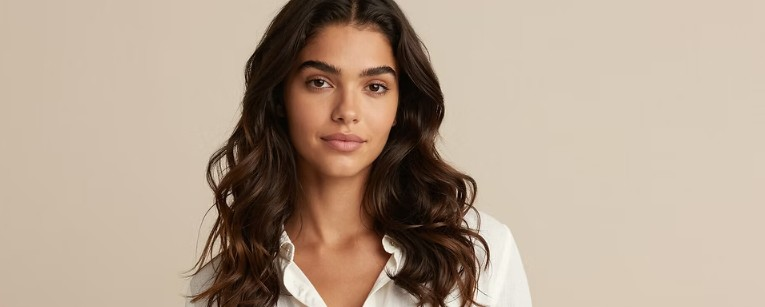
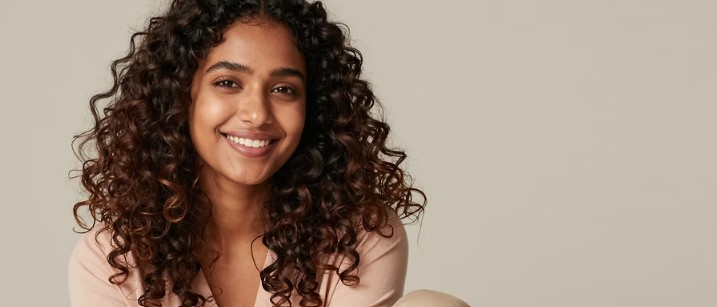
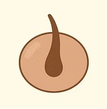
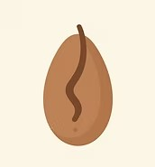
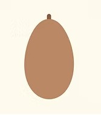
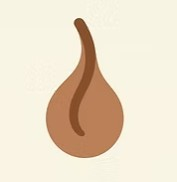

Learn how your hair type affects your routine and helps you choose the right products for stronger, healthier hair.
Straight hair reflects more light and often becomes oily faster. It benefits from lightweight products and regular cleansing.

Wavy hair sits between straight and curly hair. It needs hydration, soft definition, and gentle styling for best results.

Curly hair needs moisture retention, anti-frizz routines, and curl-friendly care to stay healthy and defined.
Coily hair is beautifully textured and delicate. Deep conditioning and protective styling are especially important.

Your follicle is perfectly circular. It helps your hair grow straight and smooth like a slide.

Your follicle is shaped like an oval. This makes your hair grow in soft, gentle waves.

Your follicle is a flat oval. This shape makes your hair grow out in bouncy loops.

Your follicle is very flat and skinny. It creates tiny springy curls that are full of life.